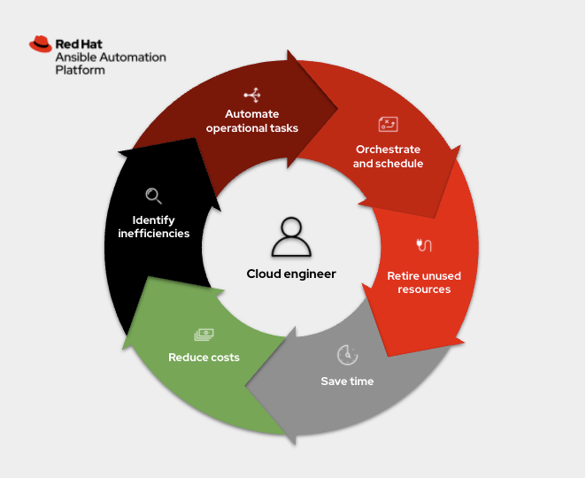
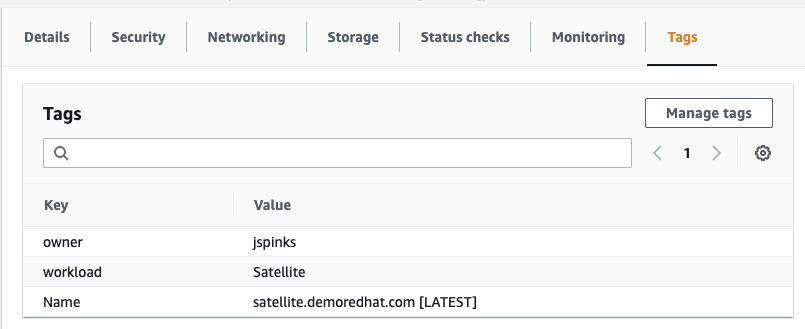
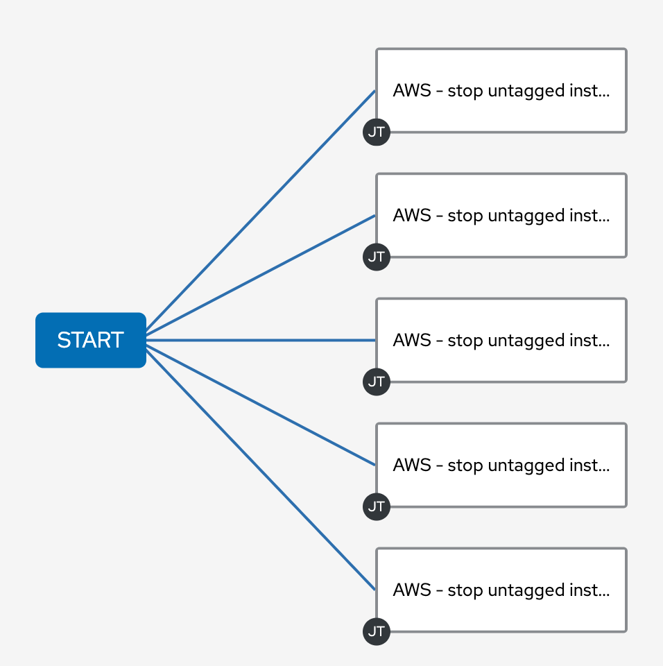
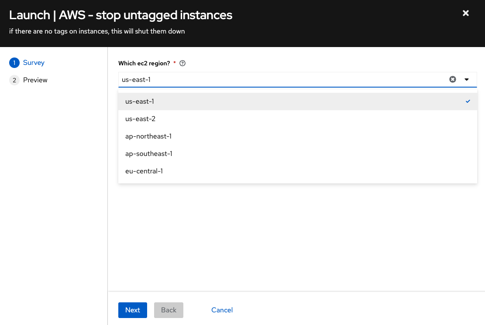
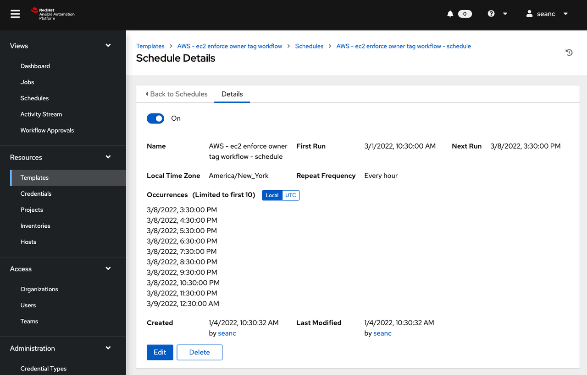

Two Simple Ways Automation Can Save You Money on Your AWS Bill
Two Simple Ways Automation Can Save You Money on Your AWS Bill
Red Hat Ansible Automation Platform is an excellent automation and orchestration tool for public clouds. For this post, I am going to walk through two common scenarios where Ansible Automation Platform can help out. I want to look outside the common public cloud use-case of provisioning and deprovisioning resources and instead look at automating common operational tasks.

What is an operational task? It is simply anything that an administrator has to do outside of creating and deleting cloud resources (e.g. instances, networks, keys, etc.) to help maintain their company's public cloud account. One of the problems I've encountered is instances being left on, running up our public cloud bill in the background while we were focusing our attention elsewhere. The more users you have, the more likely problems are to occur; automation can help address these issues and maintain control of your account. There are two common scenarios I want to address here:
- Bespoke AWS instances were manually created for a one-off initiative, usually to test something, then instances were forgotten about and left running.
- Continuous Integration (CI) instances were spun up to test changes programmatically every time a Pull Request (PR) went into our project, and would sometimes hit a corner case where not everything was deprovisioned correctly (turned off).
In both cases, orphaned instances can be left on for a long time. Imagine you spun up a couple dozen instances to test something on a public cloud, then you got busy, lost track of time and forgot to terminate the instances before stopping work for the day. That might be 16 hours (at minimum) of time when you were charged and received no value out of the public cloud that your company was financing. Now multiply this by dozens of users and that bill can end up in tens of thousands of dollars really quickly.
Use-case one: dealing with bespoke orphaned instances
So let's tackle each of these issues and use Ansible Automation
Platform to automate a solution for the first scenario above where
instances are being spun up outside any automation guard rails (i.e.
they are not using any automation tools, including Ansible, to spin up
cloud resources). We require everyone on my team who has access to the
public cloud account to tag their instances. They must create a key,
pair tag that says: owner: person

This creates a really easy way to audit and see who (which person, organization, or team) is accountable for billing, which is half the battle. I am going to write a very simple Ansible Playbook that will enforce this. I will use the fully supported amazon.aws collection to demonstrate this.
- amazon.aws
- downstream content fully supported on Ansible automation hub
- upstream code found on Ansible Galaxy
The primary difference between the community and supported Collections here is support with your Red Hat subscription. There is also significant integration testing, code auditing and Python 3 / boto3 support with the fully supported amazon.aws collection that is included as part of your Red Hat subscription.
Dealing with untagged instances
In my first Ansible Playbook, I want to get a list of all instances that have no tags. First, let's retrieve all instances in a particular region that are running:
- name: grab info for un-tagged instances amazon.aws.ec2_instance_info: region: "{{ ec2_region }}" filters: instance-state-name: running register: ec2_node_info
I am using the ec2_instance_info module found in the AWS Collection, part of the Amazon namespace. This task retrieves all instances (regardless of tags). I found the easiest way was to grab everything then filter out for empty tags:
- name: set the untagged to a var set_fact: untagged_instances: "{{ ec2_node_info.instances | selectattr('tags', 'equalto', {}) | map(attribute='instance_id') | list }}"
This
selectattr
filter is simply matching any instance that has no tags with the
['tags', 'equalto', {} ]
I can then simply terminate these since my colleague didn't follow my well establish guidelines:
- name: Terminate every un-tagged running instance in a region. amazon.aws.ec2: region: "{{ ec2_region }}" state: absent instance_ids: "{{ untagged_instances }}" when: untagged_instances | length > 0
However, since you might be more forgiving than me, you could use
state: stopped versus
absent which will turn them off versus terminate them.
Retrieving any instances with missing tags
To expand on the above, we don't just care about instances that are untagged entirely (meaning there are no tags at all), but we are specifically looking for the owner tag. I now want to retrieve any instance that is missing the owner tag. I can use the exact same logic as above but instead use the selectattr filter to look for undefined.
- name: set the missing tag to a var set_fact: missing_tag: "{{ ec2_node_info.instances | selectattr('tags.owner', 'undefined') | map(attribute='instance_id') | list }}"
I wanted to show both examples above to give a path to operationalization. Implementing the above using Ansible Automation Platform, your organization can now understand that they need to use tags, or their instances will be turned off (or worse!). Going further, the organization could use automation to enforce a particular tag to assign ownership, or action on the instance will be taken. You could use one or both of these previous examples.
Use-case two: Dealing with automated instances
For my particular use-case I have a code repository that is automatically tested. Our code is tested nightly, and everytime there is a Pull Request (PR) into the code repository. The CI testing will provision instances on AWS, configure the instances, run through automated tests, then deprovision them. Sometimes the deprovisioning step will not complete successfully, leaving orphaned hosts. One of the common things I have noticed is that the instances are often found partially turned off, where their tags are completely missing (removed) but the instances are not actually off, so we are still getting billed. The above Ansible Playbook in the previous example can catch that.
However another great test is to use a new uptime parameter.
- name: grab info amazon.aws.ec2_instance_info: region: "{{ ec2_region }}" uptime: 121 filters: instance-state-name: [ "running" ] "tag:ansible-workshops": true register: ec2_node_info
In this task there are two parameters I want to call out. First is the uptime parameter (added in the 1.4.0 of amazon.aws), which will only return instances that have run for more than that integer in minutes. For this example it has to run for more than 121 minutes, or more than two hours. I know that my CI testing should never take more than two hours. Either the instance is stuck, my automated testing broke, or deprovisioning didn't happen successfully.
The other tag here is simply a filter so that I only return instances that are part of my automated testing (versus other initiatives). In this example, it has to be a workshop. Now it should click why I need the "no tagged" example at the beginning! This entire operational task will fail if there is no tag at all. So the no tags use-case overlaps with every other use case because of how important tags can be in public cloud infrastructure.
Automating the automation
So this automation is great and all, but manually running playbooks only saves you so much time. I went ahead and used the Ansible workflows feature to hit multiple regions at once, and then schedule it so that my automation jobs run every hour.

Each rectangle on the right represents an automation job. Each job in the same column is run in parallel on my Ansible Automation Platform cluster. Each job template is set to a different region. I also used the survey feature to make this easy to configure from the Web UI.

In my particular scenario I was running automated testing in four AWS regions (us-east-1, ap-northeast-1, ap-southeast-1 and eu-central-1). Now that my workflow is complete, it is trivial to schedule my workflow to run every hour.

Voila! Now I have automated testing behind the scenes to make sure that no orphaned instances are running. For my particular use case this will save a lot of money, and force a culture of accountability around public cloud use so that costs are clear and transparent between team members.